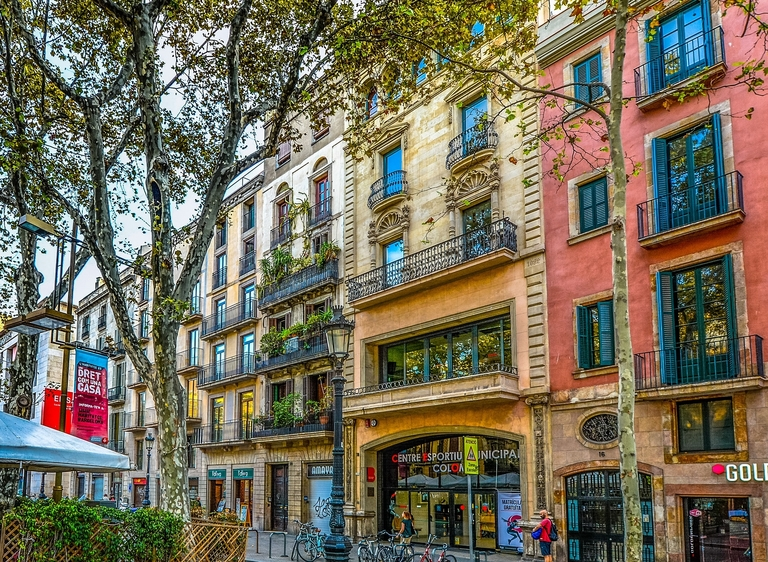

Basic Info
Barcelona is Spain's second largest city,
in population, with around 3,200,000 people. This innovative, diverse city
is located on the northeast coast of the peninsula along the Mediterranean Sea.
Barcelona is the capital of the Catalonian region, as well as the province
of Barcelona. Although Spanish is the official language in Spain, in the
Catalonian region, Catalan is also recognized as the co-official language.
The weather
The weather is typically decent year-round, with the nicest months being May
until July, as well as September,generally. Like many Spanish cities,
August tends to be the hottest month, with temperatures soaring into the
mid 30s at times. The winters are cooler, but there is not much precipitation.
Economy and resources
Barcelona is ranked just after Madrid as the country's main source of economy.
It is also home to one of the most major Mediterranean ports.
Barcelona's airport is the second largest in Spain, as well. Barcelona was known for its
manufacturing industry, and that is still prevalent today as some of the most important
industries are textiles, chemistry, motor and electronics.
As for the service market, the leaders are logistics, publishing, and
telecommunications.
Tourism and landmarks
Many tourists are drawn to the city because of its rich culture and it is very easy
find cheap flights to Barcelona from
all bigger European cities and most capitals worldwide. There is also the draw that it
is situated 160 km south of the Pyrenees and the French-Spanish border, plus, Barcelona
revels in its 4.5 km of coastline, with seven beaches. It was
the home to several impressive works done by the world renowned architects, Antoni Gaudi
and Lluis Domenech i Montaner.
The city also has a wide range of parks, several walking streets in the old part of the
city, and numerous attractions
to visit.
